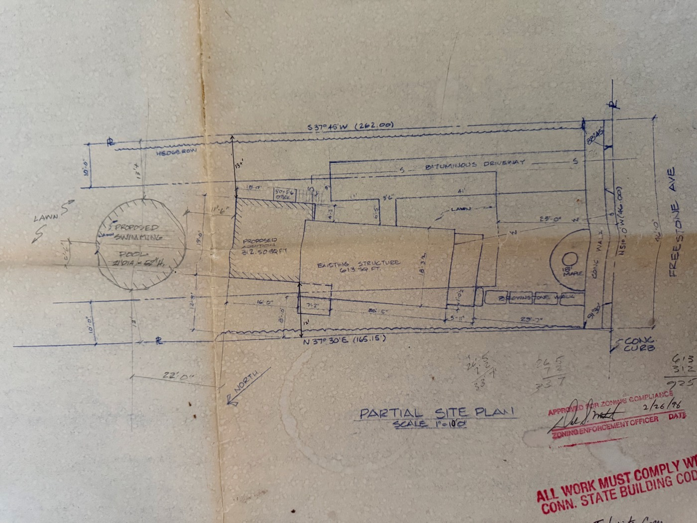

Eight views of water on the property — rainfall, runoff, the watershed it sits in, and the rainwater-harvesting potential across every surface.
Monthly precipitation normals for the design site. Rain is spread evenly across the year — there is no dry season (Köppen "f") — so the rainwater-harvesting case is not drought relief. It is (1) the mid-summer stretch when garden evapotranspiration outpaces rainfall, and (2) capturing the roughly 25 % of rainfall that currently runs off the lot to the Freestone Avenue storm drains.
Reading it for water design: every month clears 2.8 in, so cisterns are rarely bone-dry — but July–September combine the highest air temperatures with only average rain, and that is when the Zone 3 vegetable garden runs short. A single average month (~3.6 in) sheds roughly 9,000 gal off the site's ~2,475 ft² of roof + pavement; the design aims to slow, spread, and sink that rather than lose it to the street.
Source: monthly normals digitized from the Lesson 1 Climate Survey
(PDC Pro Figma Slides, June 2026; sourced there via WeatherSpark / NASA POWER),
same series used in lesson-01-climate/assets/climate-survey-charts.html.
Design-storm depth (100-yr 24-hr) from NOAA Atlas 14 Vol. 10, point
41.573, −72.634.
Estimated average-year runoff from every surface on the 0.43-acre lot. Runoff = area × 43.5 in/yr × runoff coefficient. Blue = hard (roof, pavement); green = permeable (turf, beds, woodland).
Source: areas from the 1996 site plan, the 2016 3DEP/aerial, and the Lesson 4 zone map;
rainfall from the Lesson 1 Climate Survey; runoff coefficients per the Rational Method table
(ASCE Manual 37 / WPCF Manual 9) and the Texas Manual on Rainwater Harvesting. Full calc:
lesson-05-water/work/rainwater-harvesting-analysis.md.
Where an average year's rain goes on the 0.43-acre lot. About three-quarters soaks in or evaporates; the other quarter — ≈129,000 gal — runs off, and today essentially all of it leaves to the Freestone Avenue storm drains.
Source: lesson-05-water/work/rainwater-harvesting-analysis.md —
gross rain = 18,730 ft² × 3.625 ft × 7.48; runoff by surface from the Rational Method
coefficient table; infiltration + ET taken as the balance.
Ground profiles through the lot, from the USGS 3DEP 1-meter DEM (NAVD88 feet). Vertical scale is exaggerated to make the slope readable. Two cuts: along the lot (street → back) and across it (west ridge → east low).
Source: USGS 3DEP 1-m DEM sampled Aug 2026 (National Map ImageServer);
cross-checked against USGS EPQS. Full transects: lesson-05-water/work/watersheds-water-flow.md.
Plan view of how water moves across the lot — from the 3DEP 1-meter DEM and the Lesson 4 zone map. A drafting guide for the Figma Site Water Flow Map (template p. 61) and Catchment Area Map (p. 59); trace it over the real base map.
Source: lesson-05-water/work/watersheds-water-flow.md +
rainwater-harvesting-analysis.md. Lot width exaggerated ~4× for legibility; contour
positions approximate (2-ft interval, NAVD88).
24-hour rainfall depth by return period, NOAA Atlas 14 point estimate for the site. The 2-year storm sizes swales and channels; the 100-year storm sizes overflow routing. Regional context: the 1955 state record and the 2024 south-western CT flood.
Source: NOAA Atlas 14 Vol. 10 PFDS, point 41.573, −72.634 (partial-duration series). 1955 record: NWS State Climate Extremes Committee. 2024 event: NWS NY / CT Public.
The site drains to the Connecticut River watershed — New England's largest river system — through a nested set of hydrologic units. Whole watershed to parcel is about 26 million : 1.
Source: USGS WBD point query at 41.573, −72.634; extent via Connecticut River
Conservancy / American Rivers. Detail: lesson-05-water/work/watersheds-water-flow.md.
Metered use per billing period, from four consecutive Town of Portland bills with an unbroken meter trail Sep 2024 – Jun 2026. Bar width = days in the period; bar height = gallons per day. Two adults, no in-ground irrigation.
Source: Town of Portland Water & Sewer Departments,
bills dated 01/15/2025, 07/17/2025, 10/17/2025, 07/17/2026 (service periods 09/24/2024–06/16/2026).
Meter readings in cubic feet × 7.48 = gallons. Two periods span an un-imaged bill but the
prior/current meter reads chain continuously. Scans in lesson-05-water/assets/.

Partial Site Plan — approved for zoning compliance 2/26/1996. Existing structure 613 ft², proposed addition 312.5 ft², frontage on Freestone Ave N 51°00'W 46.00 ft. No additions to the house since.